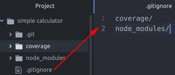
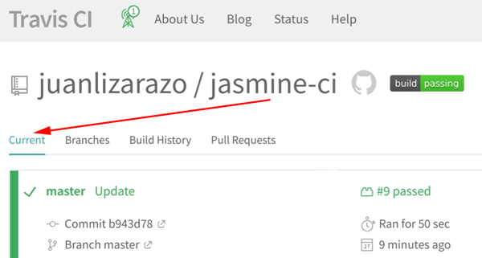

Why Karma?

We are no longer need to create the "lib" (nor the "spec-runner.html" file) manually anymore. We are going to install the dependencies, using NPM...
npm i karma jasmine-core karma-jasmine karma-jasmine-matchers --save-dev
The "package.json"
{
...
"scripts": {
"test": "karma start"
},
"devDependencies": {
"istanbul": "^0.4.5",
"jasmine-core": "^3.1.0",
"karma": "^2.0.4",
"karma-cli": "^1.0.1",
"karma-coverage": "^1.1.2",
"karma-jasmine": "^1.1.2",
"karma-jasmine-matchers": "^3.8.3",
},
"dependencies": {}
}We need to configure Karma by creating the "karma.conf.js" with
module.exports = function (config) {
config.set({
frameworks: ['jasmine', 'jasmine-matchers'],
files: [
"./custom-matchers.js",
'*.js',
'*.spec.js'
],
plugins: [
'karma-jasmine',
'karma-jasmine-matchers',
'karma-coverage'
],
reporters: ['dots'],
colors: true,
singleRun: true,
})
};To run Karma

Problem: it's boring to have to click on the link (which shows - almost - nothing. Just to allow to execute the tests in the console).
Solution: use the "Headless browser".
What is a headless browser? A headless browser is a type of software that can access webpages but does not show them to the user and can pipe the content of the webpages to another program. Unlike a normal browser, nothing will appear on the screen when you start up a headless browser, since the programs run at the backend.
We have to install two packages: puppeteer (for 'headless browser') and karma-chrome-launcher
Then, we need to include it into the "karma.conf.js" file
module.exports = function (config) {
config.set({
frameworks: ['jasmine', 'jasmine-matchers'],
files: [
"./custom-matchers.js",
'*.js',
'*.spec.js'
],
plugins: [
'karma-jasmine',
'karma-jasmine-matchers',
'karma-chrome-launcher',
'karma-coverage'
],
reporters: ['dots'],
colors: true,
browsers: ['ChromeHeadless'],
singleRun: true,
})
};Let install Istanbul: Istanbul instruments your ES5 and ES2015+ JavaScript code with line counters, so that you can track how well your unit-tests exercise your codebase.
We need to Install karma-cli if you want to be able to use karma in your command line.
Generate code coverage using Istanbul, we need to install
Then, we need to include it into the "karma.conf.js" file
module.exports = function (config) {
config.set({
frameworks: ['jasmine', 'jasmine-matchers'],
preprocessors: {
'*.js': ['coverage']
},
files: [
"./custom-matchers.js",
'*.js',
'*.spec.js'
],
plugins: [
'karma-jasmine',
'karma-jasmine-matchers',
'karma-chrome-launcher',
'karma-coverage'
],
// 'dot': start, 'coverage': end
reporters: ['dots', 'coverage'],
colors: true,
browsers: ['ChromeHeadless'],
singleRun: true,
coverageReporter: { // the output
dir: 'coverage/',
reporters: [
{type: 'html', subdir: 'html'}
]
}
})
};To launch the test:

We could see the report in "coverage/html/index.html", because, we configure (in the "karma.conf.js"):
module.exports = function (config) {
config.set({
...
coverageReporter: { // the output
dir: 'coverage/',
...
}
})
};If we "forgot" to write unit test some part, Karma will show us (parts with the background in "pink"):

Let create a repository name "jasmine-ci" in your Github account. Then copy the link with https or ssh (the guide of the differences here)

On our console, under the root of our project ("simple calculator")

Now, everything is ready for our "Continuous Integration" (CI) system...
We are going to use "Travis CI"
We are looking for our jasmine-ci repository
From now, when we make changes in jasmine-ci, we'll see information in the "Travis CI" UI. But before that, we need to create a manifest file for "Travis CI".
We need to create the file ".travis.yml" at the root of the project.
language: node_js
node_js:
- "8.11"
install:
- npm install
script:
- npm test
addons:
chrome: stable
before_install:
- google-chrome-stable --headless --disable-gpu --remote-debugging-port=9222 http://localhost &
before_script:
- "sudo chown root /opt/google/chrome/chrome-sandbox"
- "sudo chmod 4755 /opt/google/chrome/chrome-sandbox"Then, we are going to add the ".travis.yml" file to our REMOTE repository
In the "Travis CI" UI, to executing the tests (if not automatically triggered)
Go to "Current"

And wait (several minutes) until the tests are done. Then, we could see the log below it.